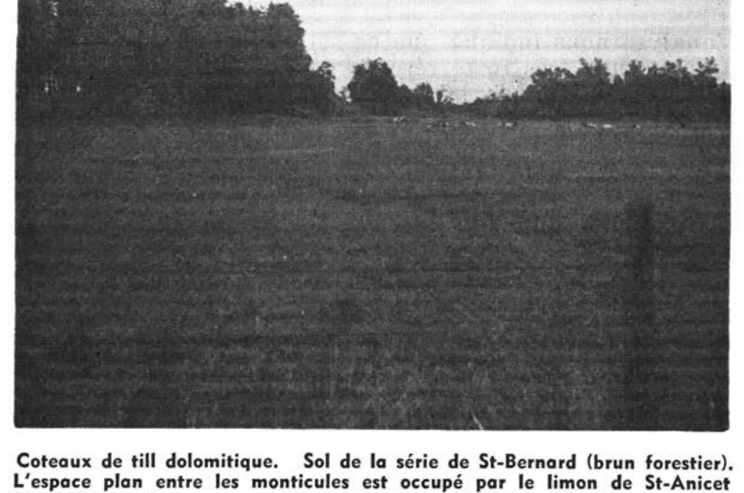

Identification & Caractéristiques Générales
La série Saint-Anicet s'est développée sur des dépôts de sédiments argileux et limoneux d'origine lacustre ou marine ancienne, remaniés ou surmontés par des matériaux minéraux fins dans les basses-terres du Saint-Laurent. Ces sols occupent généralement des positions topographiques planes ou faiblement ondulées, caractérisées par des pentes très douces variant de 0 à 2 %, ce qui restreint naturellement l'écoulement superficiel des eaux de précipitation et de fonte nivale.
Le profil pédologique montre une texture à dominance argilo-limoneuse ou limono-argileuse sur toute la profondeur de la solum, conférant au milieu une capacité de rétention en eau élevée mais une perméabilité intrinsèque lente. Le drainage naturel est jugé imparfait à médiocre, l'horizon sous-jacent présentant une compacité modérée qui freine la percolation verticale et favorise l'établissement périodique d'une nappe phréatique perchée temporaire au printemps ou lors de fortes pluies. La réaction du sol (pH) se situe généralement dans une plage favorable à neutre, et la teneur en matière organique de l'horizon de surface est adéquate pour soutenir l'activité biologique, bien que la battance et la battance potentielle des limons exigent une gestion rigoureuse de la structure.
Sur le plan agronomique, les sols de la série Saint-Anicet présentent un potentiel élevé pour la grande culture ainsi que pour l'horticulture et les cultures maraîchères, sous réserve d'une correction efficace des contraintes hydriques. Le principal facteur limitant des rendements demeure l'excès d'eau printanier et la lenteur du ressuyage, rendant l'installation de réseaux de drainage souterrain (tuyauterie) indispensable pour optimiser le calendrier cultural et prévenir la compaction par la machinerie lourde. Un travail du sol adapté et une rotation maintenant la porosité structurale complètent les interventions requises pour exploiter pleinement la productivité de ces terres.
Classification Taxonomique & Environnement Pédologique
| Ordre Pédologique | Gleysolique |
|---|---|
| Grand Groupe (SCSS) | Gleysol humique |
| Sous-Groupe Taxonomique | Gleysol humique régosolique |
| Famille Pédologique | Limoneuse-fine, mixte sableux, neutre |
| Mode de Dépôt Parental | Lacustre |
| Classe de Drainage Naturel | Imparfaitement drainé |
| Régime Thermique & Humidité | Doux / Humide |
Description Morphologique du Profil Type
Séquence génétique des horizons pédologiques caractérisant le profil type représentatif de la série Saint-Anicet :
Profil représentatif — Comté de Huntingdon
✓ Source : Comté de Huntingdon — Page 124Couleur Munsell : Non précisée
Structure & Consistance : Grumeleuse
Description morphologique : Limon fin, noir, structure grumeleuse, poreux, friable. pH: 6.4 — 7.0.
Couleur Munsell : Non précisée
Structure & Consistance : Polyédrique à granulaire
Description morphologique : Limon fin à limon sableux, en couches sinueuses, gris pâle, faiblement bleuté avec taches disséminées brun pâle; horizon de Gley (réduction).
Couleur Munsell : Non précisée
Structure & Consistance : Feuilletée
Description morphologique : Limon fin à limon argileux avec minces lits de sable micacé intercalés, fond gris pâle bariolé de rouille, en taches ou en trainées verticales et alternant avec rayures blanchâtres. Structure feuilletée. C'est l'horizon qui paraît le plus rouillé. pH: 7.0.
Couleur Munsell : 10YR 5/6, 2.5Y 5/4
Structure & Consistance : Feuilletée
Description morphologique : Limon fin à limon argileux, structure feuilletée, minces lits de sable fin interluminés. Abondance de paillettes fines de mica de teinte mordorée. Les trainées de rouille disséminées sur un fond gris pâle sont moins abondantes que ci-dessus. Les taches ferrugineuses se présentent en grandes plaques d'un brun ochreux diminuant d'intensité vers la périphérie. La couleur des taches ochreuses, d'après la carte Munsell, va du brun jaune (10YR 5/6) au centre, à olive clair (2.5Y 5/4) vers la périphérie. pH: 7.0.
Couleur Munsell : 5Y 6/3
Structure & Consistance : Feuilletée
Description morphologique : Limon fin à argile, structure feuilletée, gris bleuté, moyennement tassé, abondance de fines paillettes de mica. Ne fait généralement pas effervescence au contact de HCl. Les taches montrent les mêmes couleurs que ci-dessus, mais sont moins abondantes et plus petites. La masse du sol apparaît olive pâle (5Y 6/3). pH: 6.9 — 7.2.
Profils Photographiques & Planches de Terrain
Documents iconographiques, figures pédologiques et coupes de terrain documentées dans les mémoires d'inventaire pour de la série Saint-Anicet :

Propriétés Physico-Chimiques & Analyses de Laboratoire
| Horizon | Texture | pH (H₂O) | M.O. % | C.E.C. (meq/100g) | Sable % | Limon % | Argile % | Ca éch. | Mg éch. | K éch. | Cond. hydr. (cm/h) | Densité |
|---|---|---|---|---|---|---|---|---|---|---|---|---|
| 1 | Loam limoneux | 6.3 | 3.61 | 17.2 | 34.0 | 52.0 | 14.0 | 9.09 | 2.62 | 0.26 | 1.14 | 1.45 |
| 2 | Loam limoneux | 6.7 | 2.15 | 15.8 | 34.0 | 50.0 | 16.0 | 8.51 | 3.02 | 0.19 | 0.68 | 1.55 |
| 3 | Loam | 7.1 | 0.58 | 16.4 | 32.0 | 48.0 | 20.0 | 9.66 | 4.28 | 0.22 | 0.91 | 1.55 |
Particularités Régionales, Phases & Variantes Pédologiques
Déclinaisons régionales, faciès texturaux, phases d'érosion ou de pierrosité et variantes cartographiées par étude pour de la série Saint-Anicet :
| Étude Régionale | Symbole | Appellation / Phase / Variante | Différenciation avec la série type (Analyse pédologique) |
|---|---|---|---|
| Comté de Huntingdon | An |
Saint-Anicet loam argileux | Modalité modale de référence (type de base de la série). |
Distribution Pédo-Paysagère & Représentativité Cartographique (Couverture PPS 2026)
- Norton loam sableux caillouteux (NOT) — co-occurrente dans 6 polygone(s)
- Saint-Bernard loam sableux fin à loam (SBE) — co-occurrente dans 5 polygone(s)
- Sainte-Rosalie argile (SSL) — co-occurrente dans 4 polygone(s)
Aptitudes Agronomiques, Hydropédologie & Conservation des Sols
Indicateurs Hydropédologiques & Vulnérabilité à l'Érosion (BDHP 2026)
Interprétation BDHP : Potentiel de ruissellement modérément élevé. Faible taux d'infiltration, présence d'horizons ralentissant le drainage descendant.
Classement selon l'Inventaire des Terres du Canada (ITC / CLI) : Classe 2w.
- Potentiel agricole : Terroir adapté aux cultures régionales selon la texture dominante et la régie de drainage.
- Contraintes majeures : Imparfaitement drainé. Risque d'engorgement temporaire ou d'excès d'eau printanier.
- Gestion & Aménagement : Drainage souterrain ou superficiel préconisé sur les terres planes. Chaulage et apport organique régulier selon les bilans agronomiques.
- Cultures adaptées : Grandes cultures (maïs, soya, céréales), prairies fourragères et cultures maraîchères selon le contexte géomorphologique.